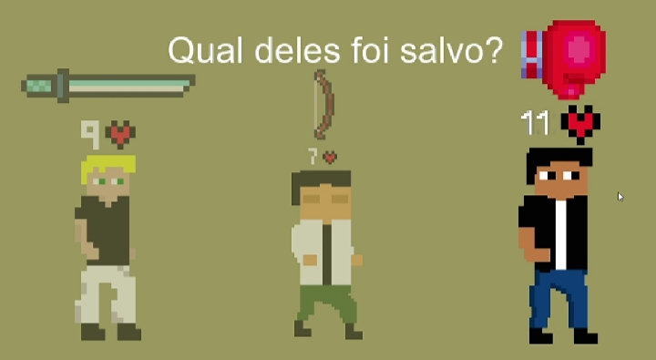
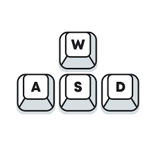
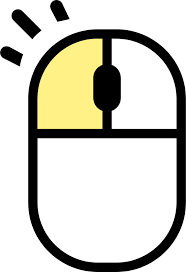
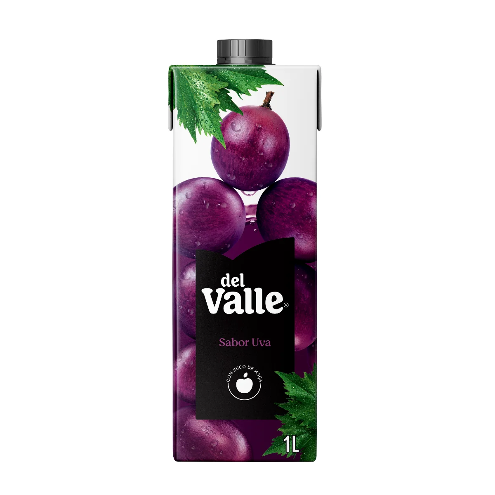
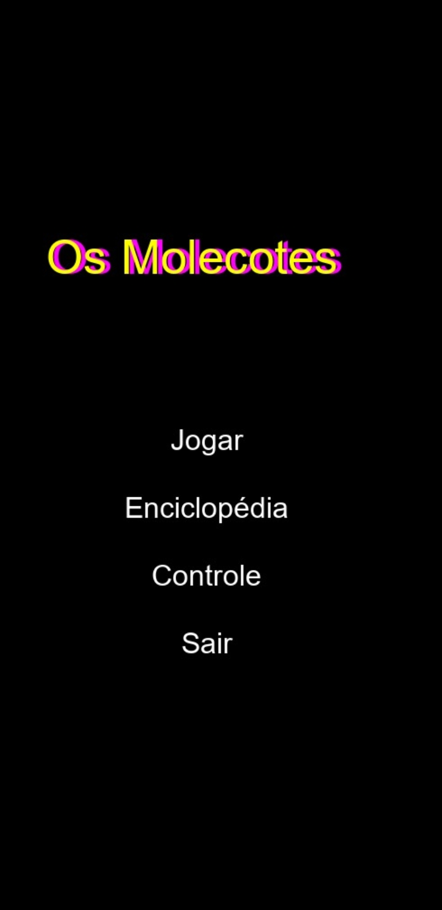
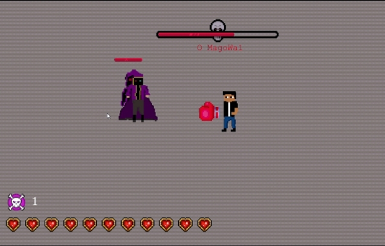
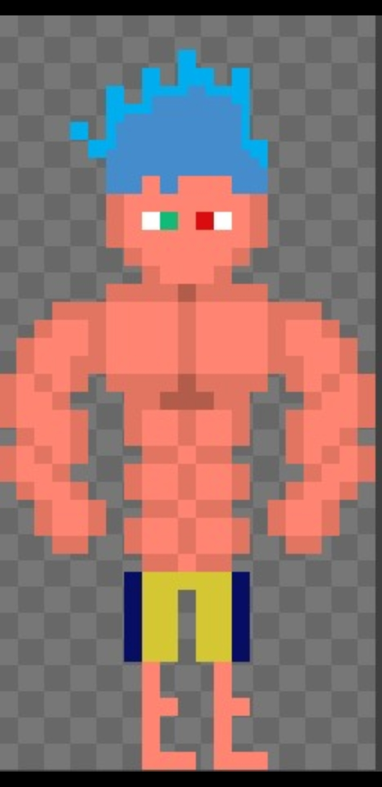

- No começo do jogo, o jogador pode escolher entre os icônicos 3 personagens: El Moreno, o poderoso lutador, o personagem com mais dano e vida dentre o grupo. Hector, o espadachim, o personagem mais rápido do grupo, e Jackson , o arqueiro, o personagem com o maior alcance.
- Os botões básicos usados no jogo são: WASD para movimento e o botão esquerdo esquerdo do mouse >>" width="300" > 
- Espalhados pelo mapa, estão os Dell-Valle mágicos do Mago Wal, que o jogador pode usar para recuperar metade dos seus pontos de vida. 
- Todos os inimigos que o jogador encontra durante o jogo serão exibidos na tela de 'Enciclopédia' do jogo.
- Para passar de estágio, o jogador deve eliminar uma quntidade mínima de inimigos. No fim de cada um dos 3 mundos há um chefe, após derrotá-lo, você avança para o próximo.
 - Dica! Durante sua gameplay, primeiro priorize a eliminação da quantidade necessária de inimigos enquanto perdendo o mínimo de vida, depois de atingir o minimo de eliminações, evite os inimigos e priorize chegar ao portal.